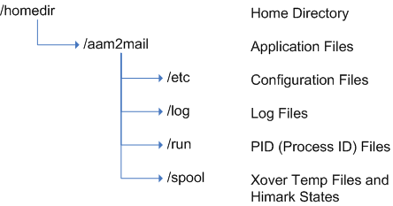

Aam2Mail - Anonymous Message Retrieval
Introduction
Usenet provides a useful repository for anonymous email messages. By storing
them in this medium, users can retrieve messages at their leisure from any
Usenet service that carries the group alt.anonymous.messages. Due to the public
nature of Usenet, messages in a.a.m are encrypted in such a manner as to
prevent identification of their ownership. This in turn means the owners of
the messages require tools to identify their messages and return them to a mail
interface. This is one such tool.
What is Aam2Mail
Aam2Mail reads messages from alt.anonymous.messages and identifies the owner by
way of the Subject content. The Subjects might be plain-text or use one of two
cryptographic methods to prevent linkability between them. These methods are
eSub (Encrypted Subject) and hSub (Hashed Subject).
When a Subject match is found, Aam2Mail will store the message in Maildir or mbox format for processing by a
mail client. Any combination of plain-text, eSub and hSub formatted subjects
can be processed and there is no realistic limit on how many of each type can
be handled.
What Aam2Mail is not
Aam2Mail will not decrypt the message content itself. This is left to the mail
client to deal with. Automated decryption would require the utility to store users'
GnuPG passphrases and this is considered
detrimental to anonymity.
Getting Started
The program can be downloaded from here or from its development repository.
Assuming you're using the packaged version, untar the package with:
tar zxvf aam2mail-<version>.tar.gz
Then follow the instructions provided in the INSTALL file.
By default the installation will create all the required directories, using a
root of $HOME/aam2mail. All the locations can be changed but
this is the default.

To change any of the default settings, copy the config.sample to
$HOME/.aam2mailrc and edit it to match your requirements. Each option and its
default is explained in the sample file.
Lastly, the subject files need to be created in the etc directory for text,
esub or hsub retrieval. The files are:
subject_text
subject_esub
subject_hsub
Each subject to test/retrieve should be entered on a seperate line of the
appropriate file. In the case of eSub, the Subject and Key should be on the
same line, seperated by a Tab.
Starting and Stopping the Daemon
To start the daemon, ./aam2mail --start
Stopping is ./aam2mail --stop
Once running, the daemon will report normal usage in aam2mail/log/aam2mail.log.
If any critical errors occur, they will be reported in
aam2mail/log/aam2mail.err. Please advise me if this happens.